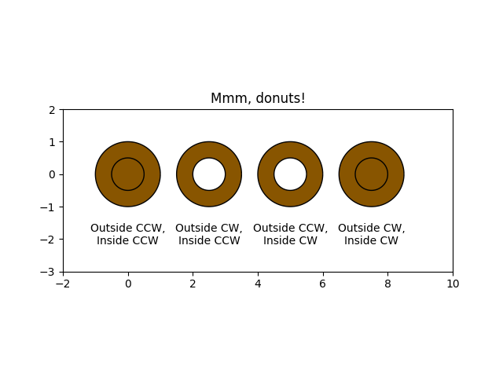

Version 2.2.2
Note
Click here to download the full example code
Draw donuts (miam!) using Path and Patches.
import numpy as np
import matplotlib.path as mpath
import matplotlib.patches as mpatches
import matplotlib.pyplot as plt
def wise(v):
if v == 1:
return "CCW"
else:
return "CW"
def make_circle(r):
t = np.arange(0, np.pi * 2.0, 0.01)
t = t.reshape((len(t), 1))
x = r * np.cos(t)
y = r * np.sin(t)
return np.hstack((x, y))
Path = mpath.Path
fig, ax = plt.subplots()
inside_vertices = make_circle(0.5)
outside_vertices = make_circle(1.0)
codes = np.ones(
len(inside_vertices), dtype=mpath.Path.code_type) * mpath.Path.LINETO
codes[0] = mpath.Path.MOVETO
for i, (inside, outside) in enumerate(((1, 1), (1, -1), (-1, 1), (-1, -1))):
# Concatenate the inside and outside subpaths together, changing their
# order as needed
vertices = np.concatenate((outside_vertices[::outside],
inside_vertices[::inside]))
# Shift the path
vertices[:, 0] += i * 2.5
# The codes will be all "LINETO" commands, except for "MOVETO"s at the
# beginning of each subpath
all_codes = np.concatenate((codes, codes))
# Create the Path object
path = mpath.Path(vertices, all_codes)
# Add plot it
patch = mpatches.PathPatch(path, facecolor='#885500', edgecolor='black')
ax.add_patch(patch)
ax.annotate("Outside %s,\nInside %s" % (wise(outside), wise(inside)),
(i * 2.5, -1.5), va="top", ha="center")
ax.set_xlim(-2, 10)
ax.set_ylim(-3, 2)
ax.set_title('Mmm, donuts!')
ax.set_aspect(1.0)
plt.show()
Keywords: matplotlib code example, codex, python plot, pyplot Gallery generated by Sphinx-Gallery